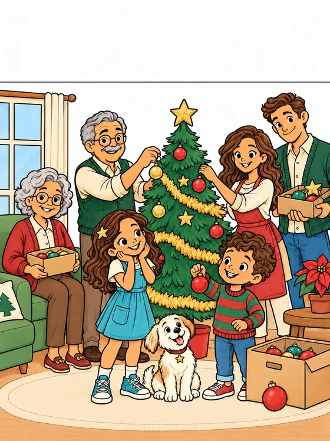
GUIA COLORIDO DO LIVRO
Um Natal com
as suas cores.
Um pouquinho de inspiração para continuar a história de Clara, Theo e sua família — agora do seu jeito.
As ilustrações para colorir e a página final de desenho convidam cada criança a criar sua própria memória de Natal.
Explorar as 19 cenas Conheça o livro na AmazonUma história de Eliane Tomás
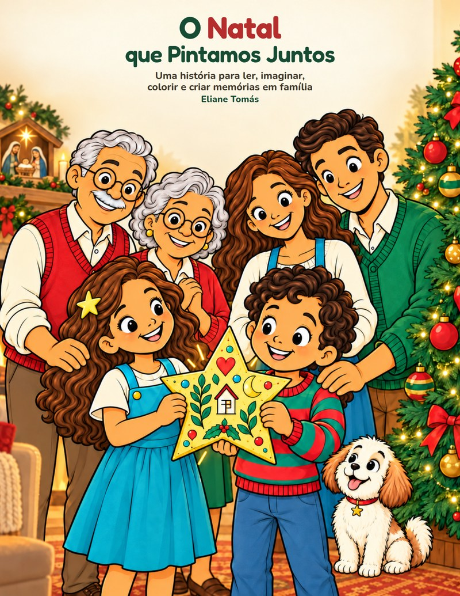
e muitas cores.
CENA POR CENA, UMA DESCOBERTA
Encontre a sua página
Escolha uma cena para ampliar.
O número da página ajuda a encontrá-la no livro.


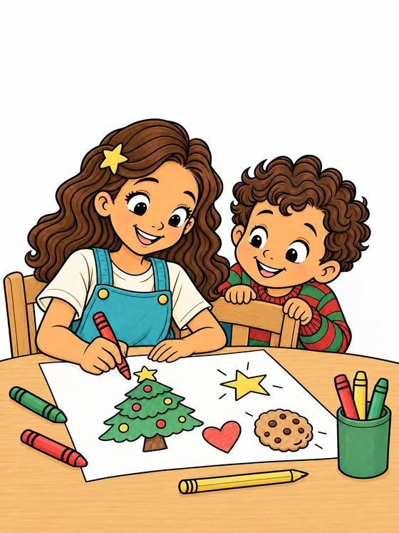
O grande plano de Clara


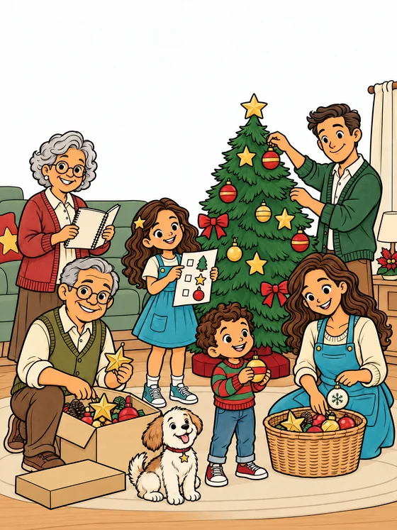
Cada um ajuda de um jeito


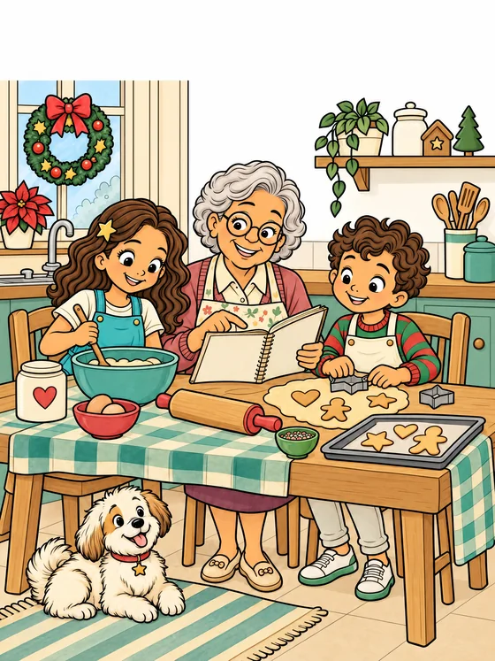
Uma receita cheia de carinho


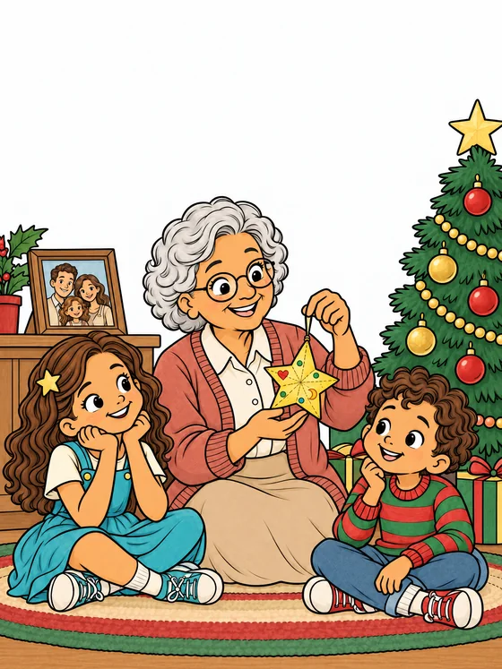
O segredo da estrela


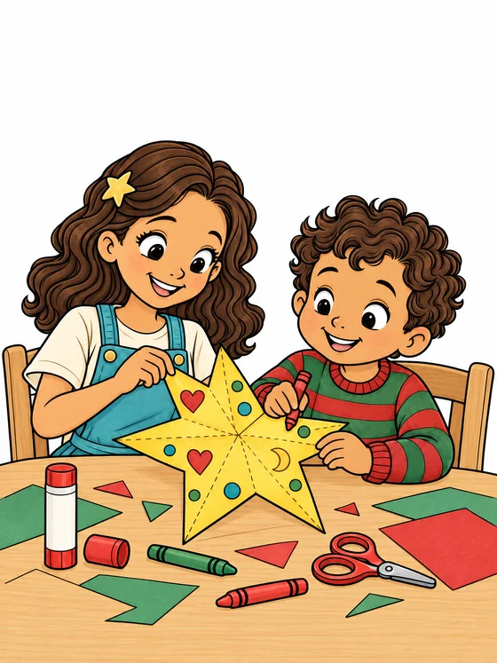
A estrela feita à mão


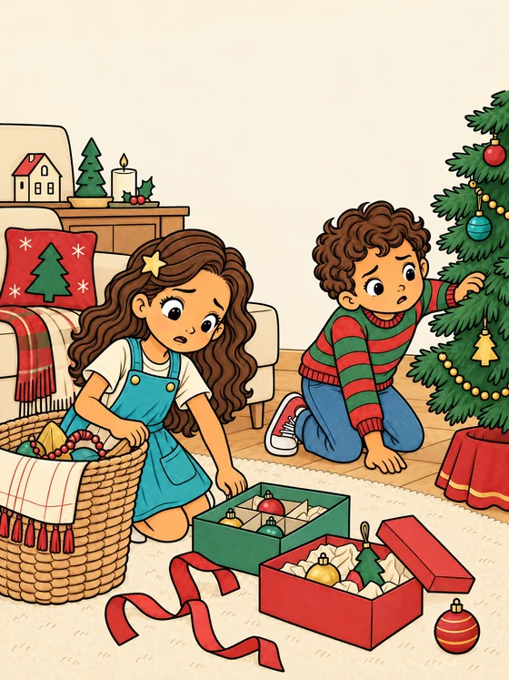
Ops! Cadê a estrela?


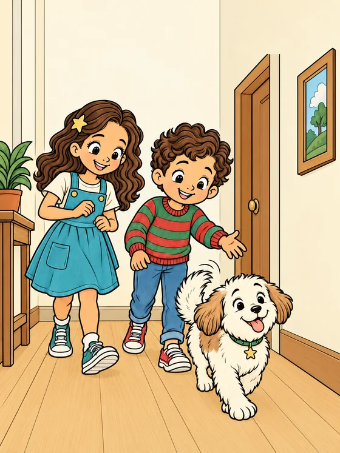
As pistas de Pipoca


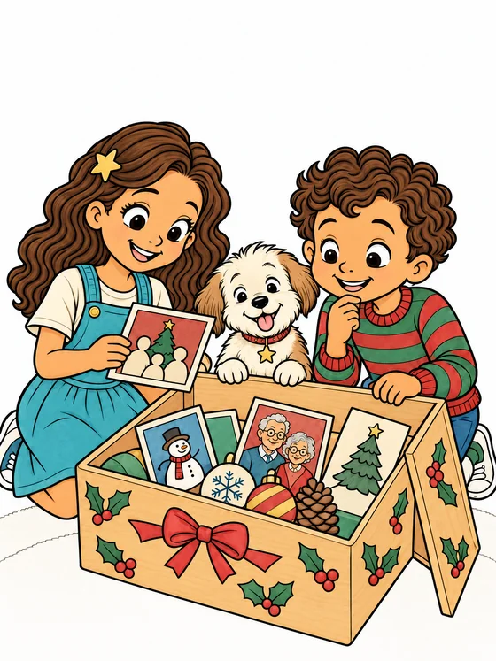
A caixa das lembranças


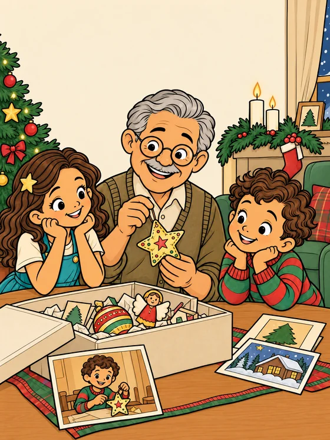
Histórias que moram nas coisas


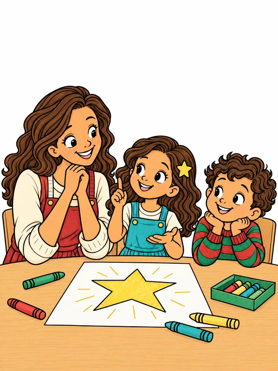
Uma ideia brilhante


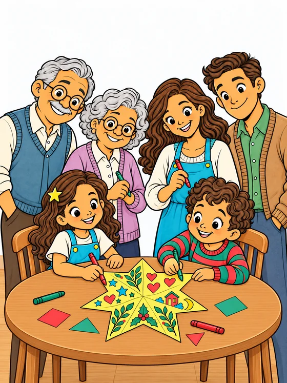
Uma estrela de muitas mãos


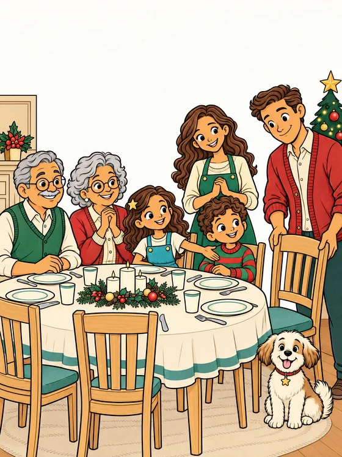
Um lugar para todos


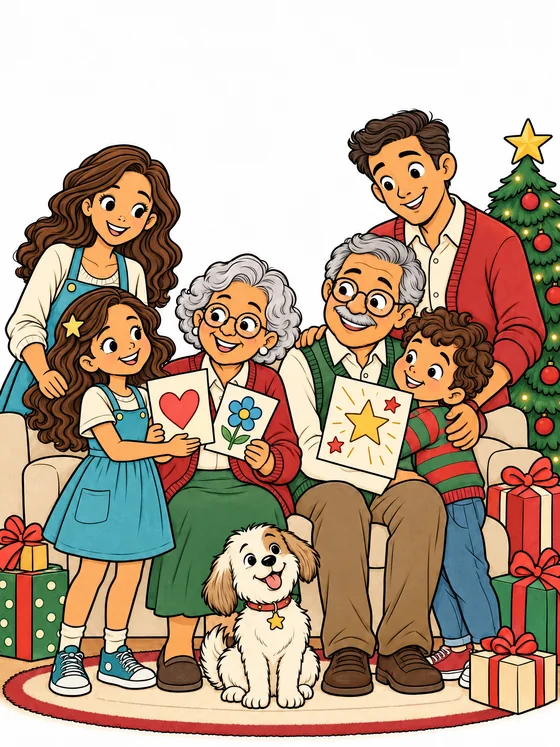
O presente mais criativo


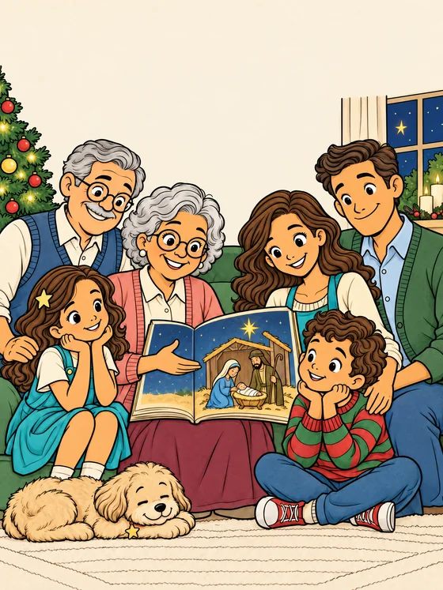
O verdadeiro sentido do Natal


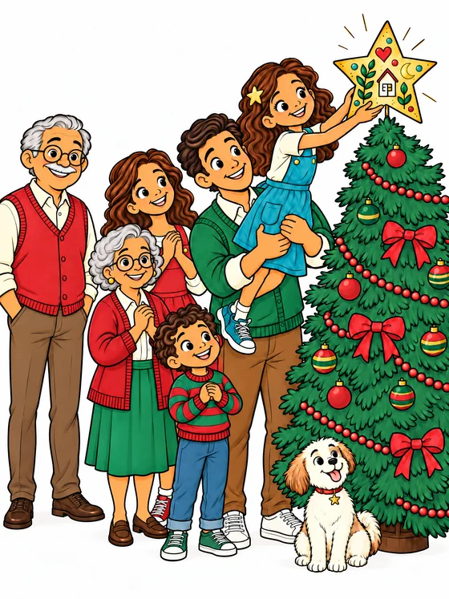
A estrela encontra seu lugar


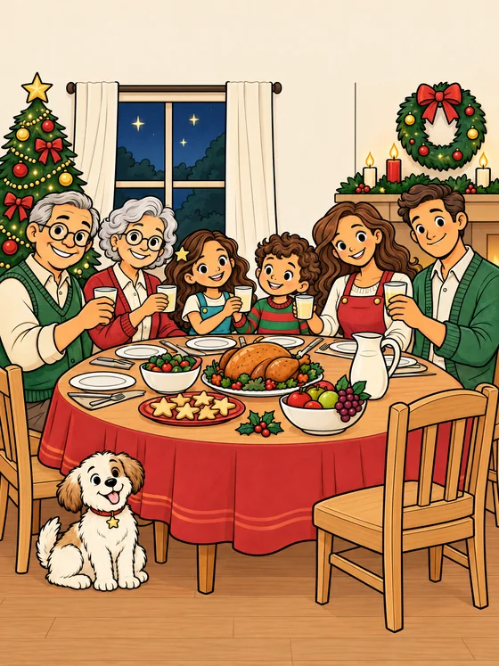
A ceia de muitos sorrisos


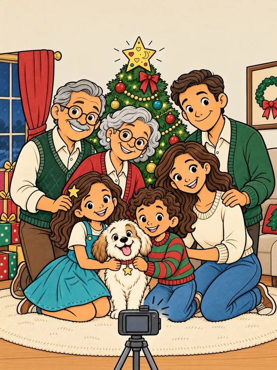
Uma lembrança para guardar


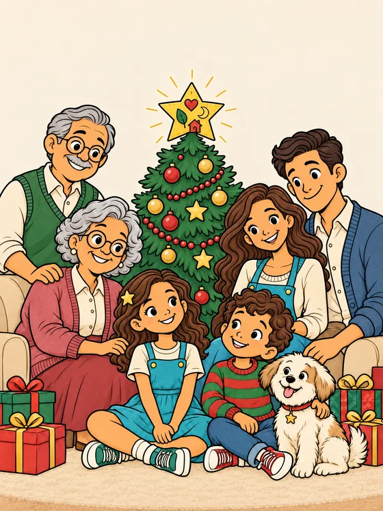
O Natal que ficou no coração

O mais bonito é criar juntos.
Separe os lápis de cor ou o giz de cera, chame alguém especial e aproveite esse momento. Não precisa ficar perfeito para virar uma boa lembrança.
Voltar ao início